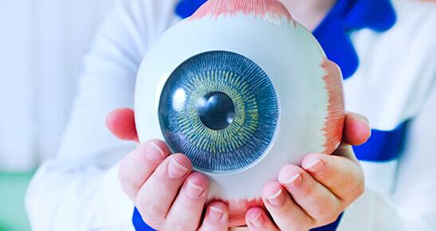
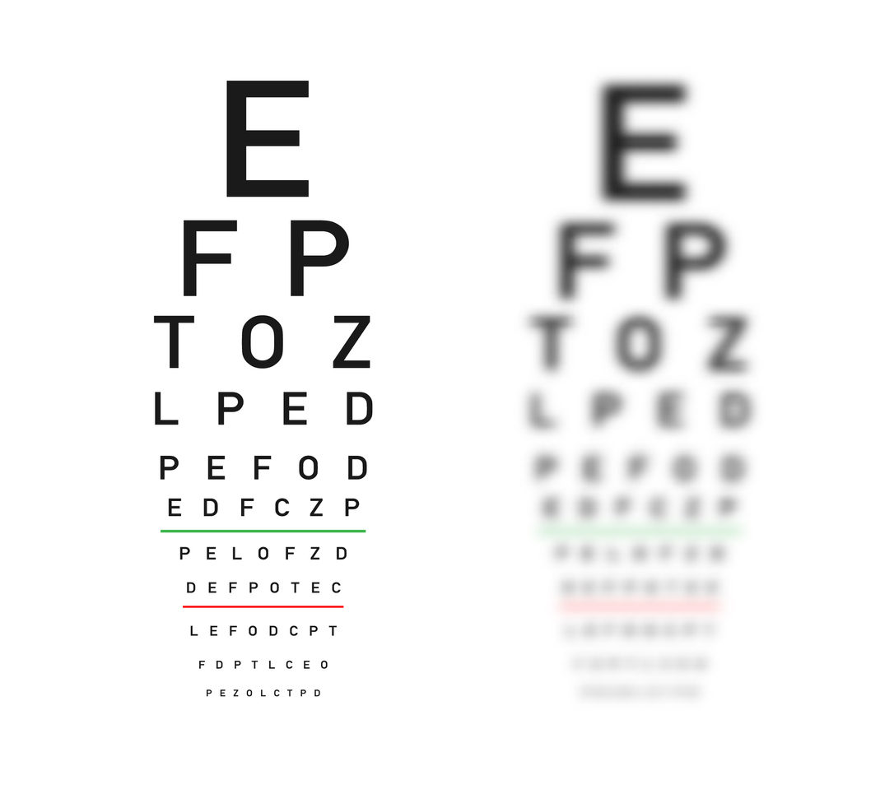
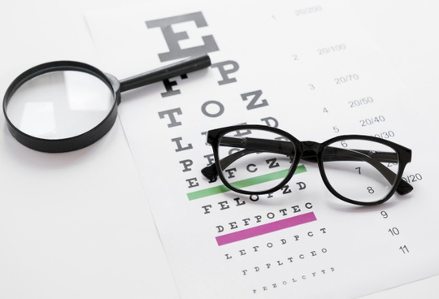
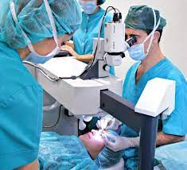
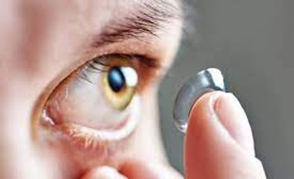
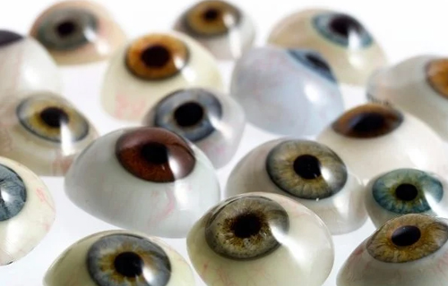

Consultas
- Autorrefractometría computada
- Fondo de ojo
- Presion ocular
- Esquiáscopa en adultos y lactantes
- Gonioscopía
- Oftalmoscopía binocular indirecta

Tests
- De esteriópsis
- De Lotmar
- De Ishihara
- De Amsler
- De ojo seco
- Visión de contraste

Oftalmologia
- Diagnostico y tratamiento de las distintas enfermedades oculares como patologia de cornea, queratocono, ojo seco, glaucoma, enfermedades de retina, etc.
- Estudios complementarios
- Campos visulaes convenvionales y no convencionales (FDT)
- Topografia Corneal
- Paquimetria
- Ecometria
- Tonometria
- Tomografía de coherencia óptica (OCT)

Cirugias
- Cirugias de catarata por facoemulsificacion con implante de los distintos tipos de Lentes intraoculares
- Cirugia de Glaucoma
- Cirugia plastica ocular
- Cirugia Corneal
- Consultorios Oftalmològicos Clarity cuenta con quirofano exclusivo para cirugia ocular.

Contactologia
Una buena calidad visual se puede obtener a través de lentes de contact, existiendo diferentes tipos de lentes para cada caso, como por ejemplo: casos de Miopía, Hipermetropía, Afaquia, en graduaciones esféricas con cilindros altos a bajos, presbicia, etc.. Disponiendo de lentes blandas o rígidas, terapéuticas, protésicos, cosméticas y de uso diario, uso flexible a uso extendido.Consultorios Oftalmológicos Clarity cuanta con especialistas en lentes de contacto que, a partir de las necesidades del paciente, evaluaran cada caso para satisfacerlas.

Protesis
Las prótesis son un reemplazo estético y funcional del globo ocular por su falta total o parcial como consecuencia de enfermedades o traumatismos graves.